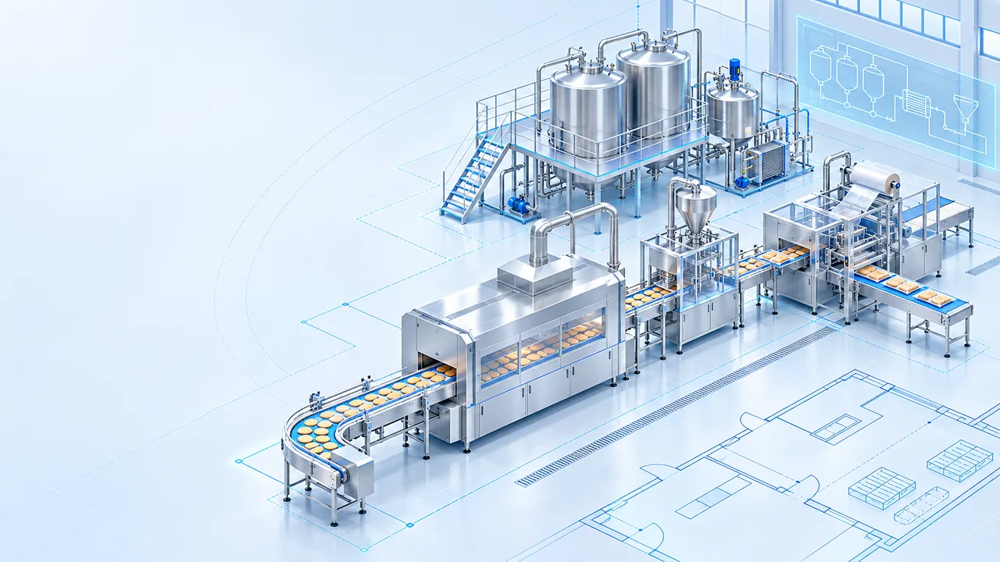
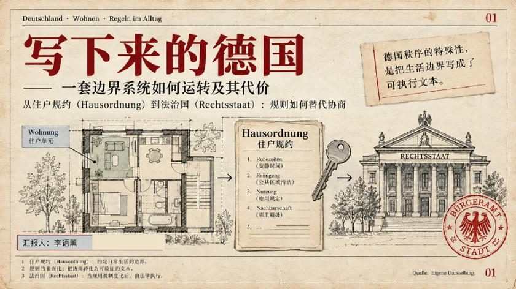
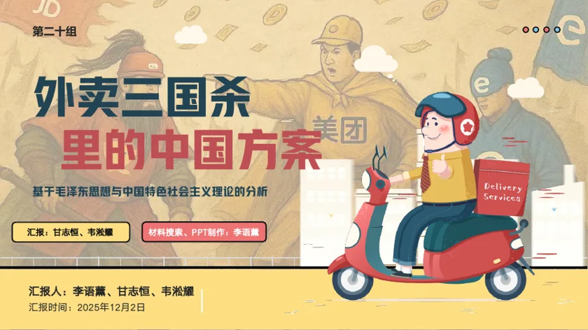
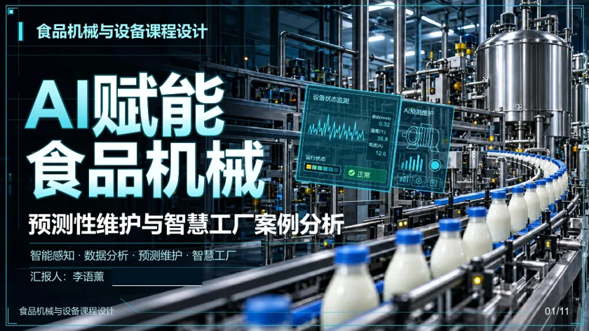

龙利达实习
支持比亚迪巴西工厂搬运项目，将多家供应商报价整理为一份可比对清单，并完成中英合同翻译归档。
EXPERIENCE & PROJECTS / 01
从企业实习到课程设计和数字化工具，展示我在真实任务中整理信息、推进交付的能力。
支持比亚迪巴西工厂搬运项目，将多家供应商报价整理为一份可比对清单，并完成中英合同翻译归档。

独立完成两条生产线设计，协调说明书、数据表与图纸，并修正 17 个设计问题。
独立开发覆盖信息管理、面试准备和备份导出的工作台，减少分散资料的查找与管理成本。
配图为概念示意；项目详情与成果文件可在卡片中查看。
PRESENTATION WORK / 02
选取三份课程 PPT，展示我如何组织内容、设计版式并呈现复杂信息。

德语国家概况 · 13 页
以住户规则为切口，用手稿式视觉串起德国规则文化与法治主题。

课程小组汇报 · 18 页
负责材料检索和 PPT 制作，用章节页、对比表与信息图组织汇报内容。

食品机械与设备 · 11 页
把设备状态、传感数据与维护流程整理成可讲述的技术演示稿。
以上为部分课程演示作品；点击卡片可在线查看公开版 PDF。
CAMPUS WORK / 04
通过活动统筹、工作手册和采购台账，呈现校园部门工作的执行与沉淀。
从策划、排班和物资协调到现场执行与复盘，推进多场活动落地。
把职责、审批和资料归档整理成可复用的工作规则，支持跨部门协作与交接。
将预算、下单、验收、分发和报销资料连接成便于追踪的工作流程。
项目内容根据本人作品集及原始交付物整理。点击各项目详情可查看代表性成果文件；涉及他人隐私或订单信息的材料仅提供公开节选。
确认目标、对象、时间与资源边界。
把任务分配到负责人和具体节点。
协调信息与物资，跟进现场变化。
归档材料，沉淀可重复使用的模板。
LET'S CONNECT
欢迎通过邮件联系我，交流岗位机会或项目细节。